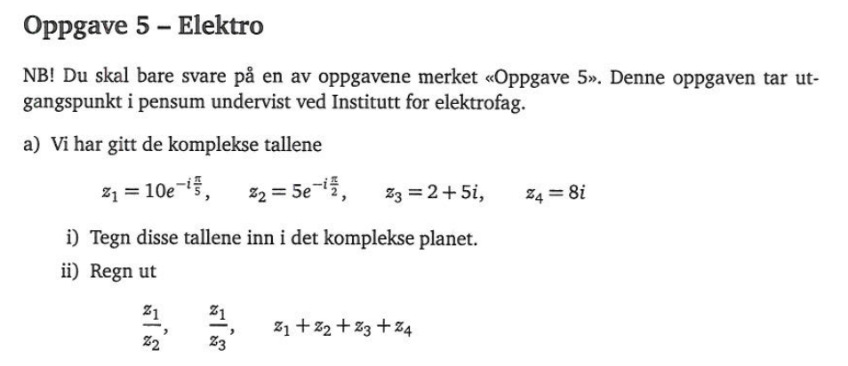
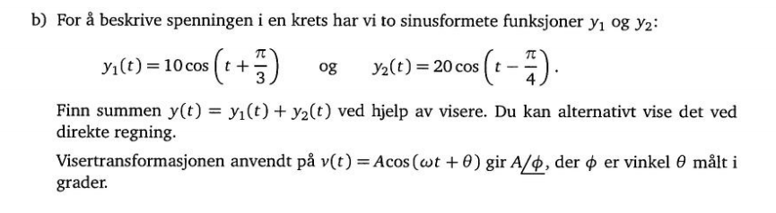
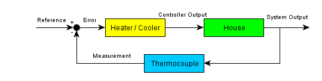
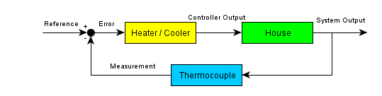

MAT106 for ELK og KOM
Uke 2
20.01.2016
Alexander Lundervold
institutt for data- og realfag
På mobil? Swipe
Forrige uke
Komplekse tall
- Definisjon
- Regneregler
- Kartesisk og polarform
Denne uken
Komplekse tall
- Visere (phasors)
Litt om innholdet i MAT106
Følger og rekker
Visere
Fra eksamen MAT100, H2012
{kind=link}
Fra eksamen MAT100, mars 2013
{kind=link}
MAT106
- Komplekse tall
- Følger og rekker
- Fourierrekker
- Lineær algebra
- Laplacetransformasjonen
- Funksjoner av flere variabler
Utvalgte smakebiter fra resten av kurset
Detaljer om anvendelser underveis i kurset
Følger og rekker
Kjenner vi en funksjon / signal og dens deriverte i et punkt kan vi "spå" oppførselen i nærheten av punktet

Kan "bytte ut" en funksjon med en lineær funksjon.
Fourierrekker
Skal bruke sinus og kosinus til å splitte opp signaler
\[f(x) = \sum_{n=0}^{\infty} a_n \cos(nx) + b_n \sin (nx) \]
Brukes f.eks. i signalbehandling


Lineær algebra
Svært nyttig i mange sammenhenger!
Hvorfor?
Én årsak:
Som nevnt, ikke-lineære problemer er ofte veldig vanskelige å analysere.
Ved å linearisere blir det enkelere. Ender ofte med lineær algebra-problemer.
Enkelt eksempel:
effekttap i motstand: $P = I^2 R$. Ikke-lineært pga. $I^2$. Kan linearisere ved hjelp av Taylorrekke.
Laplacetransformasjonen
- Transformerer fra tidsdomenet til frekvensdomenet
- Oversetter differensialligninger (vanskelig) til algebraiske ligninger (lettere)
- Kjente og kjære elektriske størrelser slik som motstand, induktans, kapasitans) kan enkelt representeres i frekvensdomenet
- Kan derfor jobbe i frekvensdomenet istedenfor tidsdomenet (ofte mer praktisk)
Ikke bare i ELE101
F.eks, kontrollteori (ELE104)
 

Idé: egenskaper til kontrollsystemet kan oversettes til egenskaper til transferfunksjonen, dvs. til den Laplacetransformerte til systemet.
Funksjoner av flere variabler
Mange fenomen avhenger ikke bare av én variabel, men flere.
Funskjoner og signaler har formen
\[y = f(x_1, x_2, x_3, \dots, x_n)\]
Må utvide kalkulus (derivasjon og integrasjon).
Funksjoner av flere variabler
Studietips
Før forelesning:
- Kikk på forelesningsnotatene fra forrige gang
- Skum gjennom de aktuelle delene av læreboken
Like etter forelesning:
- Forsøk deg på ukeoppgavene
- Les grundig i forelesningsnotatene og i læreboken
- Bruk ekstraressurser linket til på itsLearning om nødvendig
- Still spørsmål dersom noe er uklart. Via melding (epost eller itsLearning) eller i regneøvelsene
- Løs oppgaver! Ikke bare de obligatoriske, men også ukeoppgaver (og helst mer)
- Dann kollokviegrupper. Diskuter pensum og oppgaver.
- Spør om hjelp.
- Sjekk alternative kilder.
Referansegruppe
- Medlemmene fra MAT100 blir sittende (om de ønsker det). Vil gjerne utvide med 2-3 personer.
- Fungerer som et bindeledd mellom studenter og foreleser/institutt/HiB
- Møtes et par ganger i løpet av semesteret for å diskutere hva som fungerer bra og dårlig, og mulige forbedringstiltak
- Kan potensielt forbedre undervisningen, både dette semesteret og i senere år
Følger og rekker
Hva er en følge?
Språk for å beskrive følger:
- Oppad begrenset: finnes tall $M$ slik at $a_n \geq M$
- Nedad begrenset: finnes tall $M$ slik at $M \geq a_n$
- Begrenset: både oppad og nedad begrenset
- Voksende: dersom $a_1 \leq a_2 \leq a_3 \leq \cdots$
- Strengt voksende: $a_1 < a_2 < a_3 < \cdots$
- Avtagende: dersom $a_1 \geq a_2 \geq a_3 \geq \cdots$
- Strengt avtagende: $a_1 > a_2 > a_3 > \cdots$
- Monoton: dersom enten voksende eller avtagende
- Positiv: dersom $a_n > 0$
- Alternerende: dersom annenhvert positivt og negativt ledd